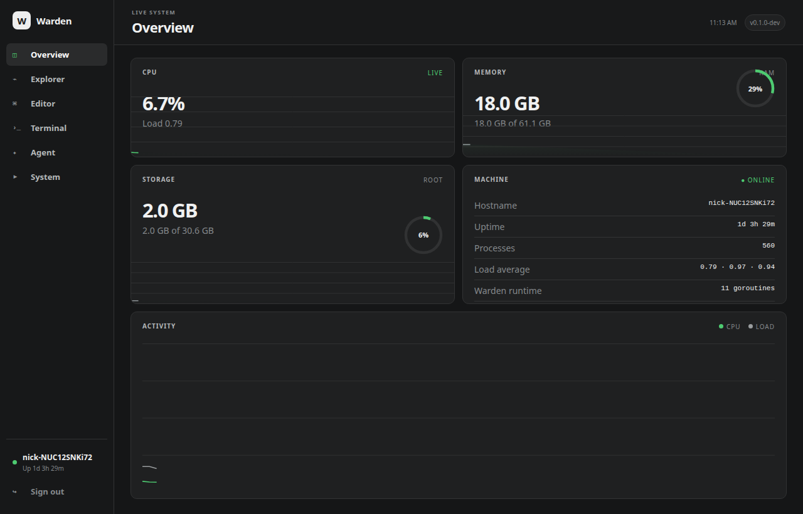

Documentation · Monitor
Monitor
Fast answers to the common “what is this machine doing?” questions without turning the overview into a wall of command output.

Current metrics
The overview reads Linux system information through the Go backend and renders CPU usage/load, memory, root-filesystem storage, hostname, uptime, process count and Warden runtime information. Browser-side history gives short-term context for activity.
What it is not
Monitor is an operational convenience surface, not a replacement for Prometheus, Grafana or a long-term metrics pipeline. Warden deliberately keeps this page compact and useful for immediate server work.
Local alert rules
Monitor provides the current observations; Alerts and event rules add durable threshold evaluation, incident history and acknowledgement for this host.